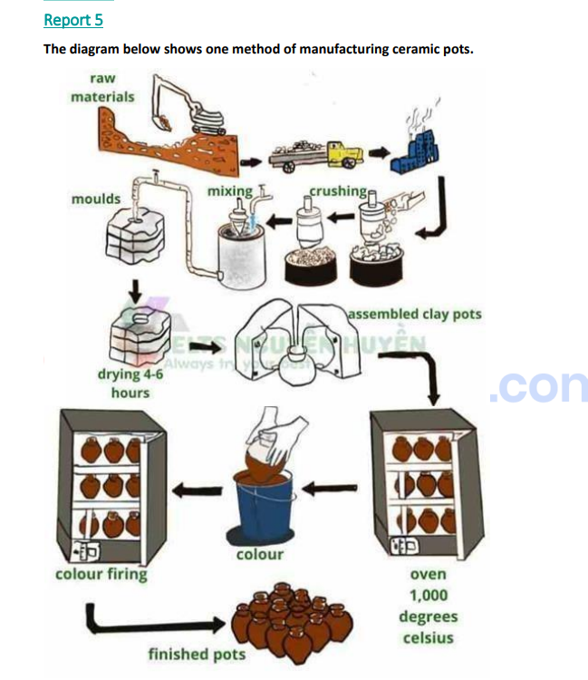

IELTSda "Process" ya'ni jarayon tushganda, ma'lum bir mahsulot qanday yasalishi yoki tabiatdagi sikl (masalan, suv aylanishi) beriladi. Buni to'g'ri yozish uchun sizga quyidagi 5 qadam kerak bo'ladi:
Jarayonlarda ish-harakatni kim qilyotgani muhim emas, nima bo'layotgani muhim. Shuning uchun gaplarni Majhul nisbatda (Passive Voice) yozish kerak. Qoidasi: Object (Narsa) + am/is/are + V3/ed (Fe'lning 3-shakli).
DIQQAT: Agar jarayon tabiiy bo'lsa (yomg'ir yog'ishi, quyosh chiqishi, o'simlik o'sishi), unda PASSIV ISHLATILMAYDI! (The sun shines, the plants grow).
Jarayon ketma-ketligini ko'rsatish uchun gaplarni bir-biriga bog'lash kerak:
Yuqori ball olish uchun ikkita bosqich bitta gapda birlashtiriladi:
Jarayonga oydinlik kiritish uchun: which (qaysiki), where (qayerdaki), in order to (...qilish maqsadida) so'zlarini qo'shing. Misol: ...are taken to a factory, where they are put on the shelves.
Insho boshida berilgan savolni o'z so'zlaringiz bilan qayta yozasiz (Paraphrase). Masalan: The diagram illustrates how tea is produced.
Undan keyin darhol umumiy xulosa (Overview) berasiz: There are 18 stages in the process, from planting the seeds to drinking a cup of tea.
Question: The pictures below show how tea is produced. They also illustrate the process of making a cup of tea.
Model Answer:
These pictures illustrate how tea is produced, and how a cup of tea is made. There are 18 stages in the diagram, from sowing the tea seeds in India and China, to enjoying a cup of tea at home.
The first step is that the tea seeds are sown, and then the sun shines, which causes the seeds to grow into plants. Once the plants have grown sufficiently, the leaves are then picked by the farmer and put into baskets. After the picking stage, the tea leaves are spread out in the sun to be dried. The tea leaves are packed into boxes and then they are loaded onto lorries, which take the boxes of tea to supermarkets.
In order to make a cup of tea, first of all you buy a box of tea and take it home. Next, you fill the kettle with water and put it on the stove to boil. Meanwhile, you put a tea bag in a cup, and once the kettle has boiled, the hot water is poured into the cup. Having been left in the cup for two minutes, the tea bag is then removed, and the tea is now ready to drink. At this point, milk and sugar can be added. The final step is that you drink a nice cup of hot tea.
Rasmga qarab, chap tomondagi jarayonni o'ng tomonga yozing. Tugatgach, "Javobni tekshirish" tugmasini bosib o'z inshoyingizni namunaviy (Model) insho bilan solishtiring.

Chap tomonda PDF fayldagi savollarni o'qib, o'ng tomonda audiolarni eshiting va javoblarni kiriting. Tugatgach javoblarni tekshirishingiz mumkin.
Quyidagi audiolarni eshitib, eshitgan matningizni to'liq qilib yozib boring. (Audiolar dictation papkasidan olingan).